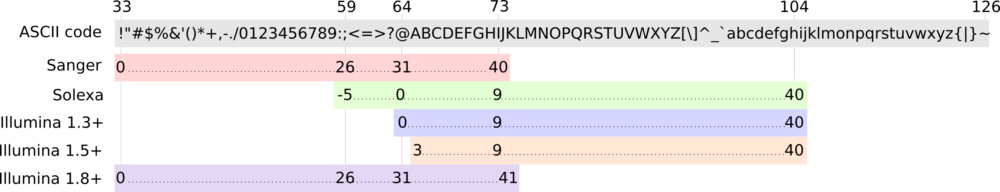
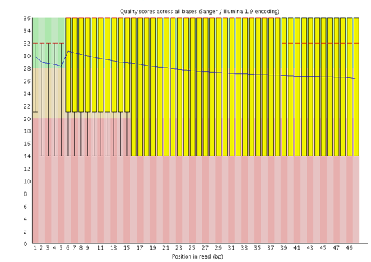
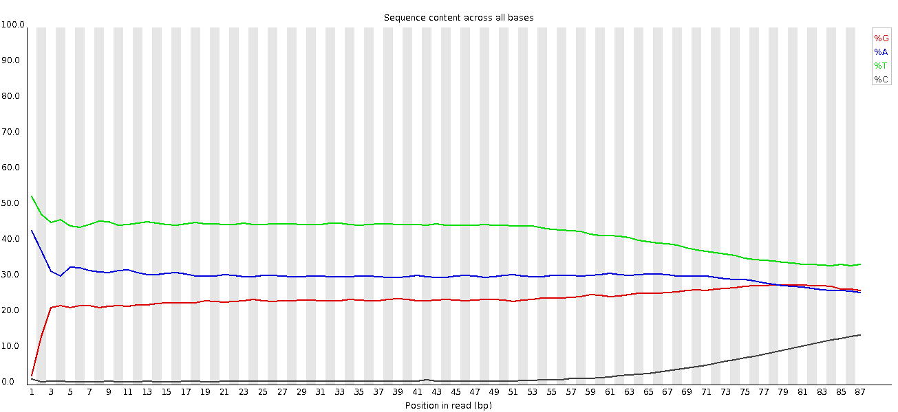
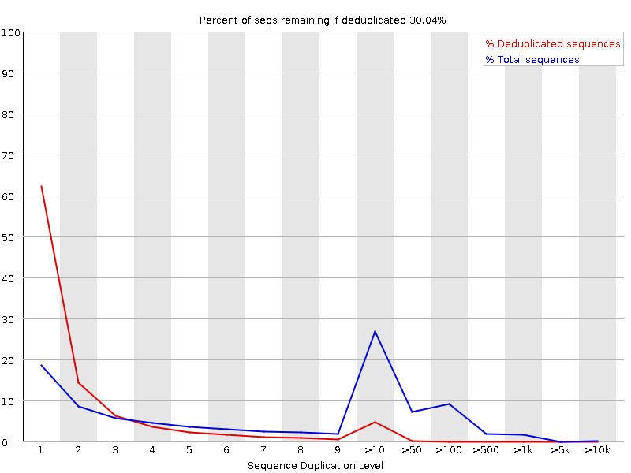
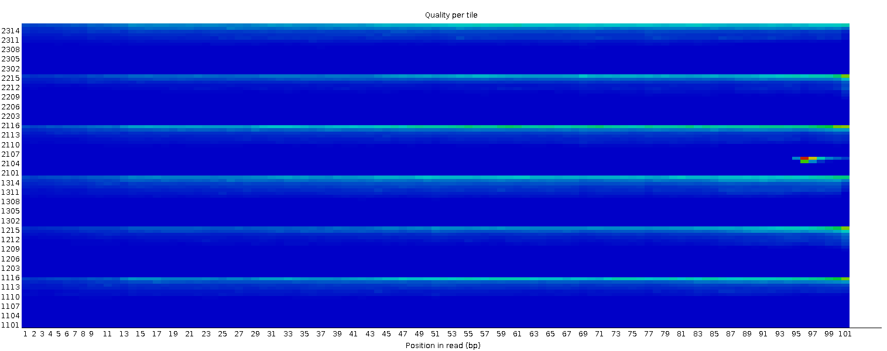

During sequencing, the nucleotide bases in a DNA or RNA sample (library) are determined by the sequencer. For each fragment in the library, a short sequence is generated, also called a read, which is simply a succession of nucleotides.
Modern sequencing technologies can generate a massive number of sequence reads in a single experiment. However, no sequencing technology is perfect, and each instrument will generate different types and amount of errors, such as incorrect nucleotides being called. These wrongly called bases are due to the technical limitations of each sequencing platform.
Therefore, it is necessary to understand, identify and exclude error-types that may impact the interpretation of downstream analysis.
Sequence quality control is therefore an essential first step in your analysis. Catching errors early saves time later on.
Open the Galaxy Upload Manager (galaxy-upload on the top-right of the tool panel)
Select Paste/Fetch Data
Paste the link into the text field
Press Start
Close the window
By default, Galaxy uses the URL as the name, so rename the files with a more useful name.
tip Tip: Importing data from a data library
As an alternative to uploading the data from a URL or your computer, the files may also have been made available from a shared data library:
Go into Shared data (top panel) then Data libraries
Find the correct folder (ask your instructor)
Select the desired files
Click on the To History button near the top and select as Datasets from the dropdown menu
In the pop-up window, select the history you want to import the files to (or create a new one)
Click on Import
As default, Galaxy takes the link as name, so rename them.
Rename the file to reads_1
tip Tip: Renaming a dataset
Click on the galaxy-pencilpencil icon for the dataset to edit its attributes
In the central panel, change the Name field
Click the Save button
We just imported a file into Galaxy. This file is similar to the data we could get directly from a sequencing facility: a FASTQ file.
hands_on Hands-on: Inspect the FASTQ file
Inspect the file by clicking on the galaxy-eye (eye) icon
Although it looks complicated (and maybe it is), the FASTQ format is easy to understand with a little decoding.
Each read, representing a fragment of the library, is encoded by 4 lines:
Line
Description
1
Always begins with @ followed by the information about the read
2
The actual nucleic sequence
3
Always begins with a + and contains sometimes the same info in line 1
4
Has a string of characters which represent the quality scores associated with each base of the nucleic sequence; must have the same number of characters as line 2
So for example, the first sequence in our file is:
It means that the fragment named SRR031716.1 corresponds to the DNA sequence GTGGATATGGATATCCAAATTATATTTGCATAATTTG and this sequence has been sequenced with a quality IIIIIIIIIIIIIIIIIIIIIIIIIIIII8IIIIIII.
But what does this quality score mean?
The quality score for each sequence is a string of characters, one for each base of the nucleic sequence, used to characterize the probability of mis-identification of each base. The score is encoded using the ASCII character table (with some historical differences):

So there is an ASCII character associated with each nucleotide, representing its Phred quality score, the probability of an incorrect base call:
Phred Quality Score
Probability of incorrect base call
Base call accuracy
10
1 in 10
90%
20
1 in 100
99%
30
1 in 1000
99.9%
40
1 in 10,000
99.99%
50
1 in 100,000
99.999%
60
1 in 1,000,000
99.9999%
question Questions
Which ASCII character corresponds to the worst Phred score for Illumina 1.8+?
What is the Phred quality score of the 3rd nucleotide of the 1st sequence?
What is the accuracy of this 3rd nucleotide?
solution Solution
The worst Phred score is the smallest one, so 0. For Illumina, it corresponds to the ! character.
The 3rd nucleotide of the 1st sequence has a ASCII character I, which correspond to a score of 40.
The corresponding nucleotide G has an accuracy of 99.99%
comment Comment
The current lllumina (1.8+) uses Sanger format (Phred+33). If you are working with older datasets you may encounter the older scoring schemes. FastQCtool, the tool we will use in the next step, can be used to try to determine what type of quality encoding is used (through assessing the range of Phred values seen in the FASTQ).
When looking at the file in Galaxy, it looks like most the nucleotides have a high score (I corresponding to a score 40). Is it true for all sequences? And along the full sequence length?
Assess the Read Quality
To estimate sequence quality along all sequences, we now use FastQC. It is an open-source tool that provides a simple way to quality control raw sequence data. It provides a modular set of analyses which you can use to give a quick impression of whether your data has any problems of which you should be aware before doing any further analysis.
hands_on Hands-on: Quality check
Run FastQCtool with the following parameters
param-files“Short read data from your current history”: reads_1
Inspect the generated HTML files
question Questions
Which Phred encoding is used in the FASTQ file for these sequences?
solution Solution
The Phred scores are encoded using Sanger / Illumina 1.9 (Encoding in the top table).
Per base sequence quality
Rather than looking at quality scores for each individual read, FastQC looks at quality collectively across all reads within a sample:
Figure 1: Per base sequence quality
On the x-axis are the base position in the read. In this example, the sample contains reads that are 37 bp long.
details Non uniform x-axis
The x-axis is not always uniform. When you have long reads, some binning is applied to keep things compact:
Figure 2: Per base sequence quality with binned reads
It starts out with individual 1-10 bases. After that, bases are binned across a window a certain number of bases wide. Data binning means grouping and is a data pre-processing technique used to reduce the effects of minor observation errors. The number of base positions binned together depends on the length of the read. With 150 bp reads, the latter part of the plot will report aggregate statistics for 5bp windows. Shorter reads will have smaller windows and longer reads larger windows.
Binning can be removed when running FastQC
For each position, a boxplot is drawn with:
the median value, represented by the central red line
the inter-quartile range (25-75%), represented by the yellow box
the 10% and 90% values in the upper and lower whiskers
the mean quality, represented by the blue line
The y-axis shows the quality scores. The higher the score, the better the base call. The background of the graph divides the y-axis into very good quality scores (green), scores of reasonable quality (orange), and reads of poor quality (red).
It is normal with all Illumina sequencers for the median quality score to start out lower over the first 5-7 bases and to then rise. The quality of reads on most platforms will drop at the end of the read. This is often due to signal decay or phasing during the sequencing run. The recent developments in chemistry applied to sequencing has improved this somewhat, but reads are now longer than ever.
details Signal decay and phasing
Signal decay
The fluorescent signal intensity decays with each cycle of the sequencing process. Due to the degrading fluorophores, a proportion of the strands in the cluster are not being elongated. The proportion of the signal being emitted continues to decrease with each cycle, yielding to a decrease of quality scores at the 3’ end of the read.
Phasing
The signal starts to blur with the increase of number of cycles because the cluster looses synchronicity. As the cycles progress, some strands get random failures of nucleotides to incorporate due to:
Incomplete removal of the 3’ terminators and fluorophores
Incorporation of nucleotides without effective 3’ terminators
This leads to a decrease in quality scores at the 3’ end of the read.
details Some other sequencing error profiles that you could see
Overclustering
Sequencing facilities can overcluster the flow cells. It results in small distances between clusters and an overlap in the signals. Two clusters can be interpreted as a single cluster with mixed fluorescent signals being detected, decreasing signal purity. It generates lower quality scores across the entire read.
Instrumentation breakdown
Some issues can occasionally happen with the sequencing instruments during a run. Any sudden drop in quality or a large percentage of low quality reads across the read could indicate a problem at the facility. Some examples of such issues:
Manifold burst
Cycles loss
Read 2 failure

With such data, the sequencing facility should be contacted for discussion. Often, a resequencing then is needed (and from our experience also offered by the company).
question Questions
How is the mean score changing along the sequence?
Is this tendency seen in all sequences?
solution Solution
The mean score over the sequence is dropping at the end of the sequences. This is very common: the sequencers are incorporating more incorrect nucleotides at the end. But the overall score stays good: over 28.
The box plots are getting wider at the end of the sequences. It means a lot of sequences have their score dropping at the end of the sequence. At after 31 nucleotides, more than 10% of the sequences have scores below 20.
When the median quality is below a Phred score of ~20, we should consider trimming away bad quality bases from the sequence. We will explain that process in the next section.
FastQC produces other diagnostic plots to assess sample quality.
tip Take a shortcut
The following sections go into detail about some of the other plots generated by FastQC.
These sections are optional, and if you would like to skip these you can:
Jump straight to the next section to continue with filtering and trimming of your dataset
Per sequence quality scores
It plots the average quality score over the full length of all reads on the x-axis and gives the total number of reads with this score on the y-axis:
Figure 3: Per sequence quality scores
The distribution of average read quality should be tight peak in the upper range of the plot. It can also report if a subset of the sequences have universally low quality values: it can happen because some sequences are poorly imaged (on the edge of the field of view etc), however these should represent only a small percentage of the total sequences.
Per base sequence content
Figure 4: Per base sequence content for a DNA library
“Per Base Sequence Content” plots the percentage of each of the four nucleotides (T, C, A, G) at each position across all reads in the input sequence file. As for the per base sequence quality, the x-axis is non-uniform.
In a random library we would expect that there would be little to no difference between the four bases. The proportion of each of the four bases should remain relatively constant over the length of the read with %A=%T and %G=%C, and the lines in this plot should run parallel with each other.
details Biases by library type
It’s worth noting that some library types will always produce biased sequence composition, normally at the start of the read. Libraries produced by priming using random hexamers (including nearly all RNA-Seq libraries as in the previous plot), and those which were fragmented using transposases, will contain an intrinsic bias in the positions at which reads start (the first 10-12 bases). This bias does not involve a specific sequence, but instead provides enrichment of a number of different K-mers at the 5’ end of the reads. Whilst this is a true technical bias, it isn’t something which can be corrected by trimming and in most cases doesn’t seem to adversely affect the downstream analysis. It will, however, produce a warning or error in this module.
ChIP-seq data can also encounter read start sequence biases in this plot if fragmenting with transposases. With bisulphite converted data, e.g. HiC data, a separation of G from C and A from T is expected:

At the end, there is an overall shift in the sequence composition. If the shift correlates with a loss of sequencing quality, it can be suspected that miscalls are made with a more even sequence bias than bisulphite converted libraries. Trimming the sequences fixed this problem, but if this hadn’t been done it would have had a dramatic effect on the methylation calls which were made.
question Questions
Why is there a warning for the per-base sequence content graphs?
solution Solution
In the beginning of sequences, the sequence content per base is not really good and the percentages are not equal, as expected for RNA-seq data (see the detail box before)
Per sequence GC content
Figure 5: Per sequence GC content
This plot displays the number of reads vs. percentage of bases G and C per read. It is compared to a theoretical distribution assuming an uniform GC content for all reads, expected for whole genome shotgun sequencing, where the central peak corresponds to the overall GC content of the underlying genome. Since the GC content of the genome is not known, the modal GC content is calculated from the observed data and used to build a reference distribution.
An unusually-shaped distribution could indicate a contaminated library or some other kind of biased subset. A shifted normal distribution indicates some systematic bias, which is independent of base position. If there is a systematic bias which creates a shifted normal distribution then this won’t be flagged as an error by the module since it doesn’t know what your genome’s GC content should be.
But there are also other situations in which an unusually-shaped distribution may occur. For example, with RNA sequencing there may be a greater or lesser distribution of mean GC content among transcripts causing the observed plot to be wider or narrower than an ideal normal distribution.
question Questions
Why is there a warning for the per sequence GC content graphs?
solution Solution
The distribution is slightly shifted on the left, and too high.
Sequence Duplication Levels
The graph shows in blue the percentage of reads of a given sequence in the file which are present a given number of times in the file:
Figure 6: Sequence Duplication Levels
In a diverse library most sequences will occur only once in the final set. A low level of duplication may indicate a very high level of coverage of the target sequence, but a high level of duplication is more likely to indicate some kind of enrichment bias.
Two sources of duplicate reads can be found:
PCR duplication in which library fragments have been over-represented due to biased PCR enrichment
It is a concern because PCR duplicates misrepresent the true proportion of sequences in the input.
Truly over-represented sequences such as very abundant transcripts in an RNA-Seq library
It is an expected case and not of concern because it does faithfully represent the input.
FastQC counts the degree of duplication for every sequence in a library and creates a plot showing the relative number of sequences with different degrees of duplication. There are two lines on the plot:
Blue line: distribution of the duplication levels for the full sequence set
Red line: distribution for the de-duplicated sequences with the proportions of the deduplicated set which come from different duplication levels in the original data.
For whole genome shotgun data it is expected that nearly 100% of your reads will be unique (appearing only 1 time in the sequence data). Most sequences should fall into the far left of the plot in both the red and blue lines. This indicates a highly diverse library that was not over sequenced. If the sequencing depth is extremely high (e.g. > 100x the size of the genome) some inevitable sequence duplication can appear: there are in theory only a finite number of completely unique sequence reads which can be obtained from any given input DNA sample.
More specific enrichments of subsets, or the presence of low complexity contaminants will tend to produce spikes towards the right of the plot. These high duplication peaks will most often appear in the blue trace as they make up a high proportion of the original library, but usually disappear in the red trace as they make up an insignificant proportion of the deduplicated set. If peaks persist in the red trace then this suggests that there are a large number of different highly duplicated sequences which might indicate either a contaminant set or a very severe technical duplication.
It is usually the case for RNA sequencing where there is some very highly abundant transcripts and some lowly abundant. It is expected that duplicate reads will be observed for high abundance transcripts:

Over-represented sequences
A normal high-throughput library will contain a diverse set of sequences, with no individual sequence making up a tiny fraction of the whole. Finding that a single sequence is very over-represented in the set either means that it is highly biologically significant, or indicates that the library is contaminated, or not as diverse as expected.
FastQC lists all of the sequence which make up more than 0.1% of the total. For each over-represented sequence FastQC will look for matches in a database of common contaminants and will report the best hit it finds. Hits must be at least 20bp in length and have no more than 1 mismatch. Finding a hit doesn’t necessarily mean that this is the source of the contamination, but may point you in the right direction. It’s also worth pointing out that many adapter sequences are very similar to each other so you may get a hit reported which isn’t technically correct, but which has a very similar sequence to the actual match.
With DNA sequencing data no single sequence should be present at a high enough frequency to be listed, but we can sometimes see a small percentage of adapter reads. RNA sequencing data may have some transcripts that are so abundant that they register as over-represented sequence.
details More details about other FastQC plots
Per tile sequence quality
Figure 7: Per tile sequence quality
This plot will only appear for Illumina library which retains its original sequence identifiers. Encoded in these is the flowcell tile from which each read came. The plot enables you to look at the quality scores from each tile across all of your bases to see if there was a loss in quality associated with only one part of the flowcell.
The plot shows the deviation from the average quality for each tile. The hotter colours indicate that reads in the given tile have worse qualities for that position than reads in other tiles. In the example above you can see that certain tiles show consistently poor quality. A good plot should be blue all over.
In some cases, the chemicals used during sequencing becoming a bit exhausted over the time and the last tiles got worst chemicals which makes the sequencing reactions a bit error-prone. The “Per tile sequence quality” graph will then have some horizontal lines like this:

Per base N content
Figure 8: Per base N content
If a sequencer is unable to make a base call with sufficient confidence, it will write an “N” instead of a conventional base call. This plot displays the percentage of base calls at each position or bin for which an N was called.
It’s not unusual to see a very high proportion of Ns appearing in a sequence, especially near the end of a sequence. But this curve should never rises noticeably above zero. If it does this indicates a problem occurred during the sequencing run. In the example below, an error caused the instrument to be unable to call a base for approximately 20% of the reads at position 29:
Sequence length distribution
Figure 9: Sequence length distribution
Some high-throughput sequencers generate sequence fragments of uniform length, but others can contain reads of widely varying lengths. Even within uniform length libraries some pipelines will trim sequences to remove poor quality base calls from the end or the first $n$ bases if they match the first $n$ bases of the adapter up to 90% (by default), with sometimes $n = 1$.
This plot shows the distribution of fragment sizes in the file which was analysed. In many cases this will produce a simple plot showing a peak only at one size, but for variable length FASTQ files this will show the relative amounts of each different size of sequence fragment.
Adapter Content
Figure 10: Adapter Content
The plot shows the cumulative percentage of reads with the different adapter sequences at each position. Once an adapter sequence is seen in a read it is counted as being present right through to the end of the read so the percentages increases with the read length. Only adapters specific to the library type are searched.
Ideally Illumina sequence data should not have any adapter sequence present. But with when using long read, some of the library inserts are shorter than the read length resulting in read-through to the adapter at the 3’ end of the read. This is more likely to occur with RNA-Seq libraries where the distribution of library insert sizes is more varied and likely to include some short inserts. In the example below, a high quality RNA-Seq library have a small percentage of the library with inserts smaller than 150bp:
Kmer Content
FastQC does a generic analysis of all of the short nucleotide sequences of length k (kmer, with k = 7 by default) starting at each position along the read in the library to find those which do not have an even coverage through the length of your reads. Any given kmer should be evenly represented across the length of the read.
FastQC will report the list of kmers which appear at specific positions with a greater frequency than expected. This can be due to different sources of bias in the library, including the presence of read-through adapter sequences building up on the end of the sequences. The presence of any overrepresented sequences in the library (such as adapter dimers) causes the kmer plot to be dominated by the kmer from these sequences. Any biased kmer due to other interesting biases may be then diluted and not easy to see.
The following example is from a high-quality DNA-Seq library. The biased kmers nearby the start of the read likely are due to slight sequence dependent efficiency of DNA shearing or a result of random priming:
Figure 11: Kmer content
This module can be very difficult to interpret. RNA-seq libraries may have highly represented kmers that are derived from highly expressed sequences. To learn more about this plot, please check the FastQC Kmer Content documentation.
We tried to explain here there different FastQC reports and some use cases. More about this and also some common next-generation sequencing problems can be found on QCFAIL.com
details Specific problem for alternate library types
Small/micro RNA
In small RNA libraries, we typically have a relatively small set of unique, short sequences. Small RNA libraries are not randomly sheared before adding sequencing adapters to their ends: all the reads for specific classes of microRNAs will be identical. It will result in:
Extremely biased per base sequence content
Extremely narrow distribution of GC content
Very high sequence duplication levels
Abundance of overrepresented sequences
Read-through into adapters
Amplicon
Amplicon libraries are prepared by PCR amplification of a specific target. For example, the V4 hypervariable region of the bacterial 16S rRNA gene. All reads from this type of library are expected to be nearly identical. It will result in:
Extremely biased per base sequence content
Extremely narrow distribution of GC content
Very high sequence duplication levels
Abundance of overrepresented sequences
Bisulfite or Methylation sequencing
With Bisulfite or methylation sequencing, the majority of the cytosine (C) bases are converted to thymine (T). It will result in:
Biased per base sequence content
Biased per sequence GC content
Adapter dimer contamination
Any library type may contain a very small percentage of adapter dimer (i.e. no insert) fragments. They are more likely to be found in amplicon libraries constructed entirely by PCR (by formation of PCR primer-dimers) than in DNA-Seq or RNA-Seq libraries constructed by adapter ligation. If a sufficient fraction of the library is adapter dimer it will become noticeable in the FastQC report:
Drop in per base sequence quality after base 60
Possible bi-modal distribution of per sequence quality scores
Distinct pattern observed in per bases sequence content up to base 60
Spike in per sequence GC content
Overrepresented sequence matching adapter
Adapter content > 0% starting at base 1
Filter and Trim
The quality of the sequences drops at the end of the sequences. This could cause bias in downstream analyses with these potentially incorrectly called nucleotides. Sequences must be treated to reduce bias in downstream analysis. In general, quality treatments include:
Cutting/Trimming/masking sequences
from low quality score regions
beginning/end of sequence
removing adapters
Filtering of sequences
with low mean quality score
too short
with too many ambiguous (N) bases
To accomplish this task we will use Cutadapt, a tool that enhances sequence quality by automating adapter trimming as well as quality control.
hands_on Hands-on: Improvement of sequence quality
Run Cutadapttool with the following parameters
“Single-end or Paired-end reads?”: Single-end
param-file“Reads in FASTQ format”: reads_1 (Input dataset)
tip Tip: Files not selectable?
If your FASTQ files cannot be selected, you might check whether their format is FASTQ with Sanger-scaled quality values (fastqsanger). You can edit the data type by clicking on the pencil symbol.
In Read 1 Options
comment Know adapters
In this dataset, no adapters were found as we saw in FastQC report. They were already removed.
If you see or know which adapter sequences were used during library preparation, provide their sequences there.
In “Filter Options”
“Minimum length”: 20
It will remove reads that are shorter than 20 bp, after trimming of adapters and bad regions.
In “Read Modification Options”
“Quality cutoff”: 20
After adapter removal (if any), we choose to remove ends ( 5’ and/or 3’) with low-quality, here below 20 in quality).
In “Output Options”
“Report”: Yes
Inspect the generated txt file (Report)
question Questions
How many reads have been found with adapters?
How many basepairs have been removed from the reads because of bad quality?
How many sequence pairs have been removed because they were too short?
solution Solution
0 reads with adapters
44,164 bp (1.2%) (Quality-trimmed:)
322 sequences
(Optional) FastQCtool: Re-run FastQC on the quality-controlled data, and inspect the new FastQC report
question Questions
How many sequences have been removed?
Has sequence quality been improved?
solution Solution
Before Cutadapt, the dataset comprised 100,000 sequences. After Cutadapt, there are 99,678 sequences
The per-base quality score looks better, but other indicators show bad values now. The sequence length distribution is not clear anymore because sequences have different size after the trimming operation
The quality of the previous dataset was pretty good from the beginning and we improved it with with trimming and filtering step (in a reasonable way to not lose too much information)
comment Bad quality sequences
If the quality of the reads is not good, we should always first check what is wrong and think about it: it may come from the type of sequencing or what we sequenced (high quantity of overrepresented sequences in transcriptomics data, biased percentage of bases in HiC data).
You can also ask the sequencing facility about it, especially if the quality is really bad: the quality treatments can not solve everything. If too many bad quality bases are cut away, the corresponding reads then will be filtered out and you loose them.
details Trimming with Cutadapt
One of the biggest advantage of Cutadapt compared to other trimming tools (e.g. TrimGalore!) is that it has a good documentation explaining how the tool works in detail.
Cutadapt quality trimming algorithm consists of three simple steps:
Subtract the chosen threshold value from the quality value of each position
Compute a partial sum of these differences from the end of the sequence to each position
(as long as the partial sum is negative)
Cut at the minimum value of the partial sum
In the following example, we assume that the 3’ end is to be quality-trimmed with a threshold of 10 and we have the following quality values
42 40 26 27 8 7 11 4 2 3
Subtract the threshold
32 30 16 17 -2 -3 1 -6 -8 -7
Add up the numbers, starting from the 3’ end (partial sums) and stop early if the sum is greater than zero
(70) (38) 8 -8 -25 -23 -20, -21 -15 -7
The numbers in parentheses are not computed (because 8 is greater than zero), but shown here for completeness.
Choose the position of the minimum (-25) as the trimming position
Therefore, the read is trimmed to the first four bases, which have quality values
42 40 26 27
Note that thereby also positions with a quality value larger than the chosen threshold are removed if they are embedded in regions with lower quality (the partial sum is decreasing if the quality values are smaller than the threshold). The advantage of this procedure is that it is robust against a small number of positions with a quality higher than the threshold.
Alternatives to this procedure would be:
Cut after the first position with a quality smaller than the threshold
Sliding window approach
The sliding window approach checks that the average quality of each sequence window of specified length is larger than the threshold. Note that in contrast to cutadapt’s approach, this approach has one more parameter and the robustness depends of the length of the window (in combination with the quality threshold). Both approaches are implemented in Trimmomatic.
Process paired-end data
With paired-end sequencing, the fragments are sequenced from both sides. This approach results in two reads per fragment, with the first read in forward orientation and the second read in reverse-complement orientation. With this technique, we have the advantage to get more information about each DNA fragment compared to reads sequenced by only single-end sequencing:
The distance between both reads is known and therefore is additional information that can improve read mapping.
Paired-end sequencing generates 2 FASTQ files:
One file with the sequences corresponding to forward orientation of all the fragments
One file with the sequences corresponding to reverse orientation of all the fragments
Usually we recognize these two files which belong to one sample by the name which has the same identifier for the reads but a different extension, e.g. sampleA_R1.fastq for the forward reads and sampleA_R2.fastq for the reverse reads. It can also be _f or _1 for the forward reads and _r or _2 for the reverse reads.
The data we analyzed in the previous step was not single-end data but the forward reads of paired-end data. We will now do the quality control on the reverse reads.
hands_on Hands-on: Assessing the quality of paired-end reads
Import the reverse read GSM461178_untreat_paired_subset_2.fastq from Zenodo or from the data library (ask your instructor)
MultiQCtool with the following parameters to aggregate the FastQC reports of both forward and reverse reads
In “Results”
“Which tool was used generate logs?”: FastQC
In “FastQC output”
“Type of FastQC output?”: Raw data
param-files“FastQC output”: Raw data files (output of both FastQCtool)
tip Tip: Select multiple datasets
Click on param-filesMultiple datasets
Select several files by keeping the Ctrl (or
COMMAND) key pressed and clicking on the files of interest
Inspect the webpage output from MultiQC
question Questions
What do you think about the quality of the sequences?
What should we do?
solution Solution
The quality of the sequences seems worse for the reverse reads than for the forward reads:
Per Sequence Quality Scores: distribution more on the left, i.e. a lower mean quality of the sequences
Per base sequence quality: less smooth curve and stronger decrease at the end with a mean value below 28
Per Base Sequence Content: stronger bias at the beginning and no clear distinction between C-G and A-T groups
The other indicators (adapters, duplication levels, etc) are similar.
We should trim the end of the sequences and filter them with Cutadapttool
With paired-end reads the average quality scores for forward reads will almost always be higher than for reverse reads.
After trimming, reverse reads will be shorter because of their quality and then will be eliminated during the filtering step. If one of the reverse reads is removed, its corresponding forward read should be removed too. Otherwise we will get different number of reads in both files and in different order, and order is important for the next steps. Therefore it is important to treat the forward and reverse reads together for trimming and filtering.
hands_on Hands-on: Improving the quality of paired-end data
As before, no adapters were found in these datasets. When you process your own data and you know which adapter sequences were used during library preparation, you should provide their sequences here.
In “Filter Options”
“Minimum length”: 20
In “Read Modification Options”
“Quality cutoff”: 20
In “Output Options”
“Report”: Yes
Inspect the generated txt file (Report)
question Questions
How many basepairs has been removed from the reads because of bad quality?
How many sequence pairs have been removed because they were too short?
solution Solution
44,164 bp (Quality-trimmed:) for the forward reads and 138,638 bp for the reverse reads.
1,376 sequences have been removed because at least one read was shorter than the length cutoff (322 when only the forward reads were analyzed).
In addition to the report, Cutadapt generates 2 files:
Read 1 with the trimmed and filtered forward reads
Read 2 with the trimmed and filtered reverse reads
These datasets can be used for the downstream analysis, e.g. mapping.
question Questions
What kind of alignment is used for finding adapters in reads?
What is the criterion to choose the best adapter alignment?
solution Solution
Semi-global alignment, i.e., only the overlapping part of the read and the adapter sequence is used for scoring.
An alignment with maximum overlap is computed that has the smallest number of mismatches and indels.
Conclusion
In this tutorial we checked the quality of two FASTQ files to ensure that their data looks good before inferring any further information. This step is the usual first step for analyses such as RNA-Seq, ChIP-Seq, or any other OMIC analysis relying on NGS data. Quality control steps are similar for any type of sequencing data:
Quality assessment with a tool like FastQCtool
Trimming and filtering with a tool like Cutadapttool
keypoints Key points
Run quality control on every dataset before running any other bioinformatics analysis
Take care of the parameters used to improve the sequence quality
Re-run FastQC to check the impact of the quality control
For paired-end reads analyze the forward and reverse reads together
Useful literature
Further information, including links to documentation and original publications, regarding the tools, analysis techniques and the interpretation of results described in this tutorial can be found here.
Feedback
Did you use this material as an instructor? Feel free to give us feedback on how it went.
 Bérénice Batut
Bérénice Batut